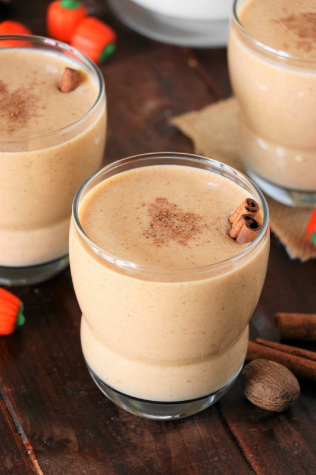

Spine Chilling Spiced Nog (vegan)

Cosy up with a creamy, lightly spiced, warming cup of our delicious spiced pumpkin "no-egg" nog
Ingredients
- 1 (15-ounce) can pumpkin puree
- 1 (14-ounce) can lite coconut milk
- 2 tablespoons honey or maple syrup (for strictly vegan), or to taste
- 1 teaspoon ground cinnamon
- ½ teaspoon vanilla extract
- 1 pint dairy-free vanilla ice cream
- 2 to 3 tablespoons rum, bourbon, or brandy or 1 teaspoon rum extract (optional)
- Dairy-free whip topping, for garnish (optional)
- Grated nutmeg, for garnish (optional)
Method
- Put the pumpkin, coconut milk, sweetener, cinnamon, and vanilla in your blender and puree until smooth.
- Add the ice cream and rum and blend until combined.
- Pour into glasses and garnish with whip and/or nutmeg, if desired.
Back to Home Page